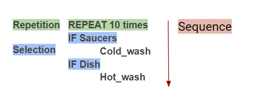

Portfolio Questions
Unit 2 - Introduction to Mobile Apps & Pair Programming
2.2 - I Have A Dream
1) In your own words, describe what event driven programming is. What event handler was used in the I Have a Dream app? How was it used?
Event driven programming is a kind of programming that the app responses to various user inputs such as touching, scrolling, shaking the phone, etc. The touch of a button is an event handler used in I have a Dream app. It was used to play sound in response to the touch of the button.
2) Is it possible to create an app without event driven programming? Explain.
It is possible to create an app, but it's functionality will be very limited. One example of a such app is a picture gallery app that shows different kinds of picture, but it can't do anything else such as receiving inputs from the user.
3) What elements and components make up the User Interface (UI) for the I Have A Dream app?
There are two visible elements, the picture of Martin Luther King and the play button. There is an invisible component called audio that plays the speech of Martin Luther King when the button is pressed.
4) What are some of the elements that make up the UI for a car? A vending machine?
A car's UI is made up of brake, suspension, steering wheel, and other stuff. A vending machien is made up of coin and bill area, buttons on the machine, and refund button.
2.3 - The Internet and the Cloud
1) In your own words, give a sentence that would explain to a friend the difference between the WWW and the Internet.
The WWW is an application that uses the internet, every browser connects to the WWW and retrieve or send data. The internet is a bigger term that includes every application that connects to internet.
2) (POGIL) List a beneficial effect and a harmful effect for a social media app that you discussed in your POGIL group. Are the effects on society, culture, or economics? Include a screenshot of the Venn diagram you made with your group.
A beneficial effect is that people who uses social media is able to connect with old friends that they haven't meet in a long time. One harmful effect is revealing self location. The beneficial effect is on individual fulfillment, and harmful effect is on safety.

3) (POGIL) If you were a developer of one of the social media apps that you discussed, how would you reduce the harmful effects?
I would reduce the harmful effects by letting the users set if they want to reveal their location or not.
2.4 - I Have A Dream, Part 2
1) What components make up the User Interface (UI) for this enhanced version of the I Have A Dream app?
This time the UI has 3 images and 2 audios. One picture of Malcolm X and Martin Luther King at the same stage, and one picture for each of Malcolm X and Martin Luther King. There are also two audios that is the speech of Malcolm X and Martin Luther King.
2) A computational artifact is something created by a human using a computer. We've just created a mobile app, which is certainly an example of such a artifact. Given examples from your own experience of computational artifacts that you've created -- images, videos, presentations, mash-ups -- and describe the software you used to create them.
I have created a few websites using google chrome and it's console and element menu. I have also created this portfolio with Microsoft Visual Studio Code.
2.5 - Mobile Devices and Apps: Hardware and Software
1) Give an example of a special purpose computer that you are familiar with and briefly describe its hardware and its software.
One special purpose computer is my calculator. The hardware is its chips that perform the calculation inside the chips. Its software is the one that takes the input such as number and operation and give it to hardware, then it returns the value and send to the digital screen to render it on the calculator.
2) Explain in your own words the difference between running your app by "Connecting to the Companion" and running your app by "Packaging" it.
Connecting to the Companion means the inventor sends the package to the mobile device and runs it base on the inventor app installed on the phone, after finish connecting the package would be removed and can not be access again with the mobile device. Packaging it means that the apk file is installed into the computer, which means the app is installed onto the mobile device, and it can be access anytime, but it can not be changed unless install again.
3) As we learned in this lesson, a byte is about the same amount of memory as a character, such as the letter 't'. There are approximately 7 million characters in all of the Harry Potter novels combined. How many bytes of memory would all of the Harry Potter novels take up? How many copies of the Harry Potter novels would fit on a 7 Gigabyte flash drive. (Remember 1 Gigabyte is 1 billion bytes.)
Since all the books combined have 7 million characters, it needs 7 megabytes of data to store all 7 books. One billion bytes are equal to 1000 megabytes, 7 billion bytes are equal to 7000 megabytes. 7000 divided by 7 is 1000, so the flash drive can fit 1000 series of Harry Potter novels.
2.6 - Algorithm Basics

1) For the robot in the maze above, is CAN_MOVE(forward) true? Is CAN_MOVE(right) true?
CAN_MOVE(forward) is true because the arrow is pointing a white square. CAN_MOVE(right) is false because the right of the arrow is a black square.
2) Write an algorithm using the 4 commands above to navigate the robot through the maze to reach the gray square. You can pretend that one of you is the robot and walk through your algorithm with your fingers on the maze. Are there commands that are repeated in your algorithm? Circle them.
3) Let's replace the repeated commands with a repetition control structure. The following command can be used to repeat a block of commands (see image in 2.6):
Rewrite your algorithm above using Repeat n times control structures (substituting in a number for n) instead of repeating the MOVE_FORWARD command many times.
4) Write a more general algorithm to navigate a maze using IF commands and a REPEAT UNTIL GoalReachedcommand, which tests if the robot has reached the gray square goal.
a) Which part(s) of the algorithm above are selection control structures?
b) Which part of the algorithm above is a repetition control structure? Remember a control structure can consist of multiple statements.

c) Does the algorithm solve the maze above and navigate the robot to the goal, the gray square? How many times does it need to run through the loop?
Yes, this algorithm solve the maze above to the gray square, and it needs to run the loop 8 times.
d) Create a maze this algorithm will NOT be able to solve! Include a description or a photo of your drawing of such a maze in your portfolio
The robot would not be able to solve this maze because it would turn left at the intersection and stuck at the dead end.
5) (Portfolio) Write an algorithm for washing a stack of 10 items that are cups and dishes mixed together, where the rule is that the cups are washed in hot water and the dishes in cold water. Use simple commands like hot_wash and cold_wash. You may also use the control structures IF and REPEAT n times. Identify the parts of your algorithm that are examples of Sequence, Selection, and Repetition.

2.7 - I Have A Dream Projects
1) In this lesson, you created your own sound board app. Give a brief description of it here. Describe its theme, if it has one, and what particular sounds (music or speeches) it plays. Attach or embed your video.
Our project is call lazy cat, it is made up of a picture of cat and two differnet picture of part of cat. When you click on the cat, it reacts and plays a certain sound.
2) Describe how you designed your app's UI. What components does it use?
Since the requirement is that we need to include atleast 3 pictures into the app, we use 1 picture of the big cat and 2 parts of cat. It needs to be click on, so we made the buttons and set its image to the cats. We also include three different audio files into the component to make it play when needed.
3) Now that you've had some experience building apps in App Inventor, what do you think about programming. Is it a creative activity? In what ways does it allow you to express yourself?/
I think programming is a creative activity because it allows me to create different things that I like. I am able to create things that can impress the others.
2.8 - What is Abstraction?
1) Write an explanation of abstraction, including at least one example, in your own words.
Abstraction is taking something hard to understand and simplify it with vague and less detail word. One example of abstraction is to simplify gaining 1 apple after another as 1 + 1 in mathematic.
2) Give 2-3 examples of abstractions in everyday life not identified in the lecture.
One example of abstraction is our mobile devices, such as my phone. I know my phone can do calculation, render pictures, and show videos, but I don't actually know how it does it, I just know it does it. Another example of abstraction is cupnoodle. Cupnoodle has a lots of different flavors, preparing methods, and taste. I don't know what it is exactly made up of but when I heard the word cupnoodle I know it has to be somekind of noodle.
3) Consider an example of software, a mobile application, or a web site and explain how it is an abstraction.
The Window system is an abstraction. It provides user with graphic interface and file systems. It is an abstraction because it hides all the coding part, or communicating with the hardware part, and instead it turns them into interfaces that are easy to use by normal users.
2.9 - Binary Numbers
1) Figure out what decimal value is represented by the following binary number 0011 1010 0011
1 + 2 + 32 + 128 + 256 + 512 = 931
2) Represent the decimal value 517 as a binary number.
1000000101
3) The binary number system is base 2 and has 2 digits. The decimal number system is base 10 and has 10 digits. The octal system is base 8. How many digits does it have? What are they, starting at 0?
They have 8 digits, 01234567.
4) Suppose the number 523 is a base-8 octal number. What would its value be in decimal? In binary?
3 * 1 + 2 * 8 + 5 * 64 = 339. 101 010 011 in binary.
5) Challenging: Convert the base-5 number 243 into decimal.
3 * 1 + 4 * 5 + 2 * 25 = 73
2.10 - Hardware Abstractions: Logic Gates
1) (POGIL) Insert a screenshot of your Logicly diagram for the Exclusive-OR circuit below.

2) (POGIL) Consider these three things: The OR gate (i.e., the physical circuit), the Boolean OR function (as defined by its truth table), and the OR symbol. How would arrange them from most abstract to least abstract? And what criterion would you use to determine their order?
OR symbol, Boolean OR function, The OR gate. I determine their order by seeing that the symbol is most abstract because it only symbolize the gate itself. The truth table defines the inputs and outputs of the gate. The gate itself is least abstract because it actually functions in circuit.
3) Consider these three things: A binary digit (e.g., 1 or 0), the flip-flop circuit diagram (), and the flip-flop circuit (i.e., the physical circuit). How would you arrange them from most abstract to least abstract and what criterion would you use to determine their order?
Binary digit, flip-flop circuit diagram, and the physical circuit. I see the number just represent the state of the circuit with a number. The diagram represents the functionality of the circuit. The actual circuit can actually run.
2.11 - Impacts of CS: The Digital Explosion
1) What is a bit and what does it mean to say that "it's all just bits"? (Koan 1) Give examples of the things today that are stored in bits?
A bit stores 0 and 1, and with lots of bits, they can store lots of data. One thing that is stored in bits are this portfolio here because it's just all bits translated by machines into readable websites that human can read.
2) Describe, in your own words, Moore's Law.
Moore's law states that the number of transistors on a microchip doubles every two year, which shows the speed of increasing technology.
3) Give an example of how the digital explosion is "neither good nor bad" but has both positive and negative implications.
An example of digital explosion is the development of computer. It has increases the calculating speed of human, but people use social media to attack other people mentally too.
4) Find and summarize a news article that talks about the positive or negative impacts of a computing innovation. Is the technology itself positive or negative? Or have people used the technology in positive and/or negative ways? Don't forget to LINK to your article!
One new computing innovation is the break through of the quantum computer technology. The technology is positive on the surface because quantum computer is able to increases the computing speed by a lot more compare to traditional computer. The negative side of quantum computer is that it is able to break the most encryptment methods available, so it can also use in negative side.
Unit 3 - Creating Graphics & Images Bit by Bit
3.2 - Paint Pot Tutorial
1) Explain the meaning of the statements shown here, both in AP CSP pseudocode and App Inventor. For example, suppose the variable X has the value 10 before the statement is executed. What value would it have after the statement is executed?

This statement means to increase x by 1. If x is 10 previously, then it would be 11 after it was executed.
2) One aspect of abstraction is that it helps to reduce details to focus on what's relevant. How does the use of a variable, such as dotsize, instead of a value, such as '5', help to reduce detail and focus on what is essential in this program?
The variable dotsize represents the actual dotsize helps reduce detail because the actual dotsize is a number, but the number itself doesn't tell people that it means the dotsize. This is why using a variable to represent it is more abstract because it means more than the number itself.
3.3 - Representing Images
1) Decode this message by converting it from binary to ASCII: 1000001 1110000 1110000 0100000 1001001 1101110 1110110 1100101 1101110 1110100 1101111 1110010 0100000 1010010 1001111 1000011 1001011 1010011 0100001 You can use this chart to help you:
It means App Inventor ROCKS!.
2) Describe what it means to say that JPEG is a lossy compression technique and whether or not it affects the quality of camera pictures.
JPEG is a lossy compression means that some datas are lost during the compression. It would affect the quality of camera pictures on a small level. This means that if the image was zoomed in, some pixels would look blurry.
3) Give a specific example of a binary sequence that can represent more than one type of data -- e.g., a number, a color, a character -- and describe how to interpret its different values.
01000011 can means the letter C, a dark red color, and hex decimal of 43, and decimal number of 67. When this value is interpret differently, it means different things.
3.4 - Paint Pot Projects
1) For enhancement #5 (the "If Block Exercise") give a brief description of your solution to this problem. PROVIDE A SCREENSHOT OF YOUR APP'S CODE -- the revised blocks -- and describe how the if/else block works to solve the problem in this case. If appropriate, include a description of any significant problems or bugs you encountered in solving this problem. App Inventor now has a Download Blocks as Image feature (right click on the white space in the blocks editor to choose) that also can be used to take a screenshot of all of your code or the Windows snipping tool can be used.
My solution is if pen size is less than 0, then set pen size to 0. The if else block solve the problem because pen size needs to set to 0 only if pen size is less than 0 after pen size was decreases.

2) When you use the Camera component to take a picture as the Canvas background, explain why the picture goes away when the app is restarted. HINT: Think about the different hardware components we talked about in an earlier lesson and where on the device the picture is stored. What do you think could be done to prevent the picture from disappearing when the app is restarted?
The picture goes away because the picture is stored in RAM, so it goes away once the memory that stores the picture is not used anymore. The picture can be used again if it was stored on the hard drive as part of the data of the app so the user can pull it out to use it again.
3.5 - Paint Pot Refactoring and Procedural Abstraction
1) The Wikipedia article on refactoring talks about code smell and one motivation for engaging in refactoring. What is code smell? Describe briefly two examples of "code smell" and how refactoring would eliminate them.
Code smell is source code that does not follow development procedure and restrict the ability in further developments in the future. One example of code smell is the multiple usage of same piece of code in different area. Refactoring can eliminate this smell by setting up functions that would be used to call them once and for all. Another example of code smell is excessive long line of code. Refactoring can remove this problem by separating one line of code into different lines with comments.
2) Insert a screenshot of the procedure from your app below.

3) What are the advantages of using procedural abstraction? Name at least 2 advantages.
One advantage of procedural abstraction is that it simplifies multi-step algorithm into a single function call which simplifies the code. Another advantage is a procedural abstraction is able to simplify the calculation of mathematical concept that certain number such as the median or the mean of a list of number can be calculated by the procedure.
3.6 - Error Detection
1) (POGIL) Describe an algorithm for identifying the card that was flipped.
The algorithm is to check every row first to see if any of the row has odd number of face-up cards. After finding that row, then search in column to see if any column has odd number of face-up cards in that row. Then the one that has odd number of face-up card in that row and column is the error.
2) (POGIL) The card "trick" shows that it is always possible to identify the card that was flipped as long as only one card was flipped. Would it be possible always to determine if an error occurred if two cards were flipped?
It is possible to identify the error if two cards are fliipped, but it is not possible to fix it on it's own because there are possibilities of diffrerent kinds of error.
3.7 - Parity Error Checking
1) Explain how the error card trick from the Error Detection lesson uses a parity scheme. Was it an even or odd parity scheme?
The card trick uses even parity scheme by placing cards base to make the rows and column to have even number of face up and down cards.
2) What are some of the limitations of using parity bits for error detection?
One limitation of using parity bits are that more space is needed for the parity bits to exist. Another limitation is that parity bits are in no use if the datas are corrupted on a large level.
3) Another type of error detection is a check sum. Research what a check sum is and then describe it in your own words. Can a check sum identify where an error occurs?
Check sum is a type of parity scheme that adds the sum of the data to the end of the data. This method can detect an error but can not know the exact position of the error.
4) (Optional) Explain in your own words the difference between error detection and error correction. Describe how the error correction process used in the video above allows the computer to fix errors.
Error detection detects the existance of an error but is not able to fix it. Error correction is able to spot the error and correct it to the right thing. The error correction process allows computer to fix errors on it's own with parity bits.
3.8 - Map Tour Tutorial
1) How are lists used in this app? Why is a list a useful data abstraction or an abstract data type (ADT) in programming? Is it easy to add new destinations to the tour?
2) How do APIs simplify complex programming tasks? Pick an app that you use on your device (e.g. Twitter, Google Maps) and see whether it provides an API and some of the functions you can control with it. Describe your results below.
3) How is GPS used in this app? Do some research to find out how GPS works and describe it here in a couple sentences.
4) Insert screenshots of the enhancements that you made below and describe how they work.
3.9 - Map Tour with Tiny DB
1) What does it mean to say that data is 'persistent'?
2) What's the difference, in terms of where data is located, for data stored in a global variable vs. data stored in a database?
3) Include screenshots and explanations of your enhancements.
3.10 Impacts of CS: Electronic Documents
Short Answer
1) What is metadata? Give an example of how a piece of metadata could be used to increase the usefulness of an image or document.
2) What is a model?
3) What's the difference between a raster image and an ASCII representation of a text document?
4) What are filename extensions? What are they used for?
5) What is lossless representation? What is lossy representation? What are the trade-offs in using each representation?
6) What is steganography and what is it used for? Describe in your own words the steganography algorithm used in the activity.
7) What would you have to do to delete a document from your computer so that it could not possibly be read by anyone else?
8) What is free and open source software? Provide an example.
Free Response
9) How has retouching become a controversial issue? Give an example.
10) Would you rather own a camera (or camera phone) with a higher number of megapixels or lower? Explain.
11) Other than digital images, what might be an example of a computer model? Explain your answer based on the definition of a model.
12) The code that implements App Inventor is open source and its impact on education is obvious. Find another example of open source software and describe its positive impact on education, business or society.
Construction...
Construction...
Construction...
Construction...
Construction...
Construction...